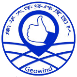

成立
南华大学经纬度团队（Geowind）创建于2013年。 团队秉承不断创新和锐意进取的核心精神，旨在建立一个精英学生的IT技术平台。 团队立足信息技术，积极跟踪技术发展的最前沿，通过承担科研项目，参加科技大赛等形式激发队员的无限激情和潜能， 并积极整合历届队员的优势和资源，共同创造团队和个人的未来。
南华大学经纬度团队（Geowind）创建于2013年。 团队秉承不断创新和锐意进取的核心精神，旨在建立一个精英学生的IT技术平台。 团队立足信息技术，积极跟踪技术发展的最前沿，通过承担科研项目，参加科技大赛等形式激发队员的无限激情和潜能， 并积极整合历届队员的优势和资源，共同创造团队和个人的未来。
南华大学经纬度团队（Geowind）创建于2013年。 团队秉承不断创新和锐意进取的核心精神，旨在建立一个精英学生的IT技术平台。 团队立足信息技术，积极跟踪技术发展的最前沿，通过承担科研项目，参加科技大赛等形式激发队员的无限激情和潜能， 并积极整合历届队员的优势和资源，共同创造团队和个人的未来。
口号
Everyone can make a difference
Logo

关注我们
我们的成长都会记录在微博上，关注我们就能获取到团队的最新动态。